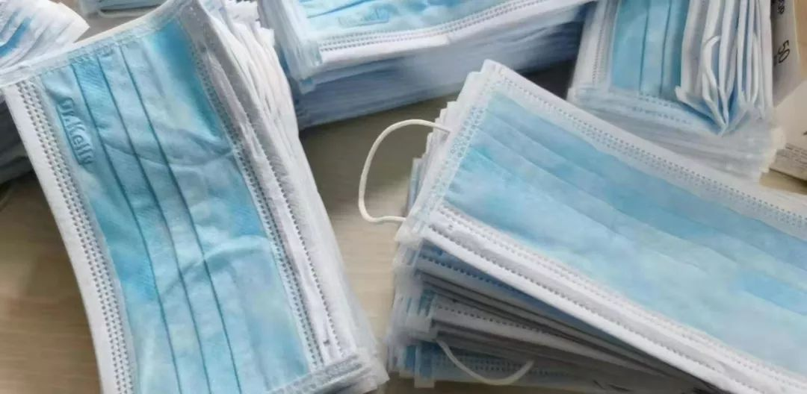
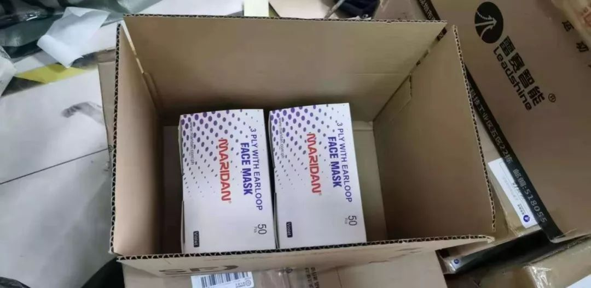
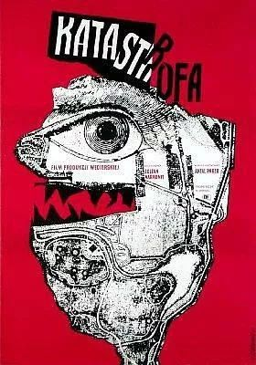
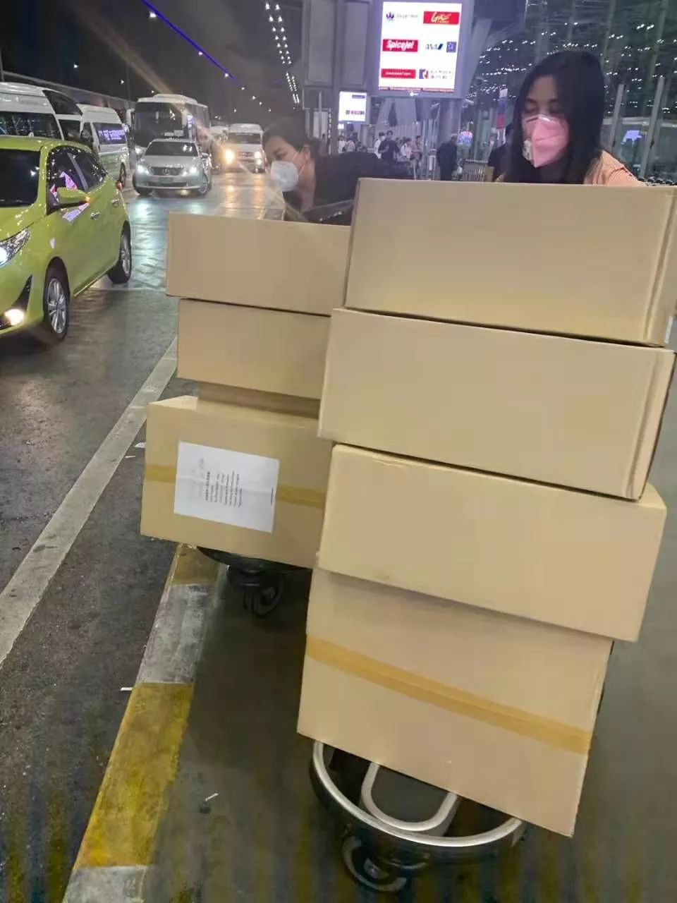

三个年轻人和100万只口罩
原文链接 备份链接 派送免费口罩后，收到的感谢信。 本文约2197字 预计阅读时间6分钟 中青报·中青网武汉前方报道组 “今日收到志愿者送来医疗物资捐赠：一次性医用口罩2500只。对捐赠人在第一时间的紧急救援表示非常真挚的感谢！”1 …

本文由娱志The Review原创出品
华东师范大学传播学院学生娱评号
转载需申请授权
作者 | 扣肉
编辑 | 拾贰
导语
在今年的救助行动中，当地政府的某些做法，反向激活了民间救助和志愿行动的效力。这次疫情，至少在武汉封城的前后几天内，志愿者凭借自己的经验和能力，几乎走上了舞台中央。娱志今日推出文章《你在城内战斗，我在城外支援》，描述了这些志愿救助活动的“邻里逻辑”和自发性，在此次防控疫情的过程里，是如何对科层机构的无效性，或不作为，进行了有效的“补充“，或“纠偏”。
这几天，娱志编辑部很辛苦。这帮年轻人充分显示了对重大公共事件的不张扬、理性却不失感性的态度，与行动力。我们联系了武汉城内的同学，与武汉医护人员的家属保持沟通后，对城外、后方无偿奉献、支援和救助的个体与组织，进行简短而持续的采访。今日娱志推出的这则，严格来说，不算新闻报道，因为缺少更多的细节，带着作者的某些观点，它更像一则采访手札。娱志的成员不是专业的记者，无法深入一线，但是她们前期线上尽可能地与不同的救助组织或个体进行沟通，希望从救助者的视角，来看待这场疫情防控。

1月23日，N大的大学生白依通过朋友圈与同样关注武汉疫情的好友共同建立了微信群，大家在群内分享自己所了解到的疫情资讯。但白依的行动并没有止步于“聊聊”而已。
在了解到武汉当地医院物资短缺的事实后，她立刻在淘宝购买了护目镜捐赠给武汉，并在朋友圈不断更新着店铺和快递的消息，很多好友因此参与进来。朋友圈内的高关注度与高互动让白依觉得可以发动更多人的力量，形成汇总，减轻武汉当地接收物资的工作量。
于是，她和朋友小陈决定共同召集有意向捐赠钱物的好心人，多买物资帮助武汉。小陈将这个消息转给了当地一家高中生的模拟联合国大会组织，借助了模联组织活动的经验，很快让捐赠活动以项目为单位运行了起来。
白依和小陈同学，就这样以非慈善人士的身份，依托一个非慈善机构，临时组织起了一个筹款团体。截止1月25日下午两点左右，他们已经筹到了大约六万元人民币，捐赠给13家医院的物资五万五千元左右。
还有很多普通人，做着跟白依和小陈一样的事情。1月24日，大学生Eve加入了一个志愿者微信群，尽管她刚刚进群，但她不是志愿工作的新人。她和前期几位发起人基本都有过类似的志愿者经历，比如汶川地震时期的支教、Metoo线上行动等。Eve的一般经验是，临时找人，建立志愿者群，分配工作以支撑运转。在这种临时组织里，大家都不怎么熟识，可经验的类似，保证工作的高效。


除夕夜，朋友圈里几乎每个人都在转发不同渠道的筹款信息，国外的校友会或个人，通过这样的方式向国内捐助钱物。出于对这些个体或组织，以及行动的有效性的好奇，我尝试着与他们接触。经过好几轮的沟通，我发现，这些团体、组织或个体面临着相似的困难。最大也是最难解决的问题，便是物资供应不足。白依和小陈同学筹集护目镜和手套，她们发现大部分淘宝店或生产厂家提供的口罩和防护服很难符合标准。白依告诉我，她们曾试图联系一些商家和厂商，都说现在没有货。那么货去哪里了呢？其实都应国家要求配往武汉了。
然而，应国家要求发往武汉的很多货物，滞后于民间团体输送的医疗物资。尽管如此，民间救助依然会遭遇某些尴尬的境地。例如25号当天中午，白依与武汉一家医院联系的时候，对方提到，国家送来的物资已经落实，暂时不缺东西。武汉当地的一些医院规定，不能接受民间捐赠。白依和Eve团队只好选择顺丰或其他有绿色通道的快递，将医疗物资直接寄给医生。
刚参与了澳洲山火募捐行动的澳洲网友@雲五，在当地本就很难买口罩的情况下，仍然想办法购买了一些物资，打算捐到武汉。1月24日之前，湖北省出台的一系列文件，却显示政府暂时不接受境外捐赠。雲五只能透过红十字会，武汉海关，湖北卫生健康委员会等机构，希望将物资运送国内。红十字、武汉海关提供的境外捐赠联系方式无法接通，湖北卫健委则专门强调拒收境外捐助。政策规定，或联系机构无果的情况下，悉尼的一些华人医师将物资从厦门口岸入境，运送到武汉。这算得上典型的曲线救助了。
部分自发组织的结构，更加心明眼亮，它们敏锐地捕捉到政府救援，甚至媒体报道的不足。Eve团队认为，当前除了武汉，湖北省其他城市或地区的支援力量非常薄弱，媒体报道对武汉周边城市关注，明显不够。所以，她们将救助目标，锁定为武汉周边如荆州，黄石等城市。

在今年的救助行动中，我发现，当地政府的某些做法，反向激活了民间救助和志愿行动的效力。这次疫情，至少在武汉封城的前后几天内，志愿者凭借自己的经验和能力，几乎走上了舞台中央。其在以前的活动中得到锻炼的一些特点，如临时组建、灵活组织、民间渠道、联系网广泛，在面对反应迟滞举措落后的湖北政府的时候，正好发挥了作用。前线和后方，在合规的限度内，达成了一种几乎无中介的联合。它直接与医院甚至医生个人进行沟通，志愿者们现在是医护人员之外，最了解湖北医院物资实际情况的人。借助于这个时代无比发达的通讯手段，志愿者们得以在全国的不同角落就能联合成组织，降低了参与志愿活动的成本，而在电商推动下迅速发展的快递物流，则成了封城之后医护人员们的最后一道战壕。
志愿者借助接近于“邻里互助”的行动逻辑，与自发性，它对官方，或科层体系顾及不到的系统和角落，进行有效地纠偏和补充。此次疫情中，民间力量的这些“补充“，或“纠偏”行动，是消解还是加固了政府对NGO或民间机构相对不那么信任的认知，和心态？一切还有待观望。当然，我不否认志愿捐助本身也存在一些问题，比如来源过多会给医院造成工作量上的增加，以及捐助物资不符合医用标准，有可能会被医院拒收。

在写完这篇观察手札后，雲五发表在豆瓣上的日记《海外捐助武汉，处处红灯》被删帖。我又联系到一位在泰国工作的导游，她和她的同行为疫区捐献了大批口罩物资。26号当天凌晨，又有几位导游带着口罩刚刚回国内。民间救助团体、志愿者们是如何参与进这页历史的书写，我们正在看，也都看到了。
（文中姓名均为化名，指导老师：吴畅畅）
主编

执行主编

--END–
主编 | 华实
执行主编 | 拾贰
美术总编 | 四七、木羊
美编组 | 云起、果子、鲸落、海岛、层层

原文链接 备份链接 派送免费口罩后，收到的感谢信。 本文约2197字 预计阅读时间6分钟 中青报·中青网武汉前方报道组 “今日收到志愿者送来医疗物资捐赠：一次性医用口罩2500只。对捐赠人在第一时间的紧急救援表示非常真挚的感谢！”1 …
原文链接 备份链接 今天是武汉封城后的第三天，也是真正意义上完全宅在家里的一天。 像之前几天一样，今天一醒过来，仍旧有无数外地的朋友们问，能为武汉和湖北做点什么。我说前线缺的都是医疗物资和专业医生，从各信息渠道看，物资正在拼命朝湖北调运， …
原文链接 备份链接 *************▲************* 大批量新国标标准的口罩正进入嘉兴“心脏仓” 。 （新华社/阿里巴巴供图/图） 全文共*4420*字，阅读大约需要*10*分钟。 “缺口以万为单位”，武汉市汉口医 …
原文链接 备份链接 2020年1月26日。 农历正月初二。 武汉封城第四天。 天门封城第三天。 耐撕。车也不让上路了，大家一起家里蹲。以前不是传着这样一个段子嘛，说给你一个房间，有食物有手机有wifi，就是不能出门，看你能待多久？万万没想 …
原文链接 备份链接 1月25日，是中国鼠年的第一天，也是武汉封城的第3天。非常时期，武汉成了全国人民挂念、祈福的城市。封城后，武汉人民的真实生活是什么样？正和岛自今日起特别推出《叶青：我在武汉疫区的第N天》专栏。叶青是一位定居武汉40年的 …